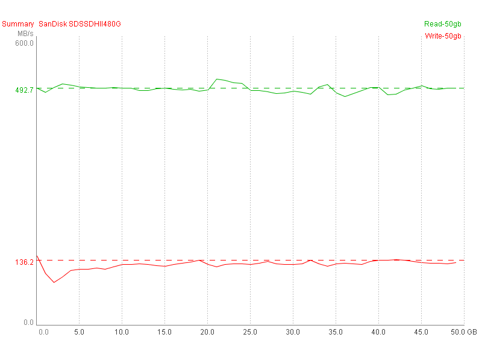
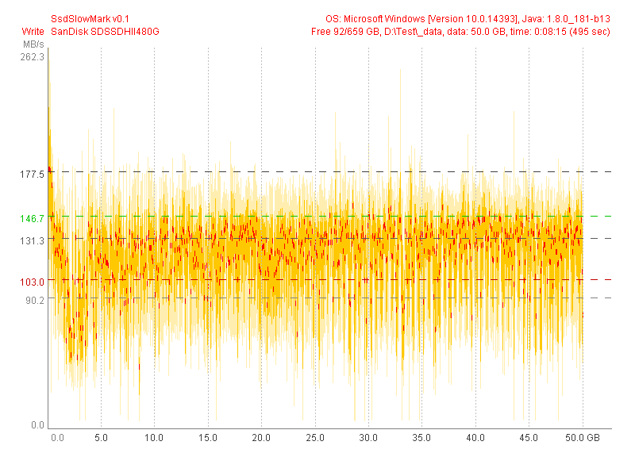
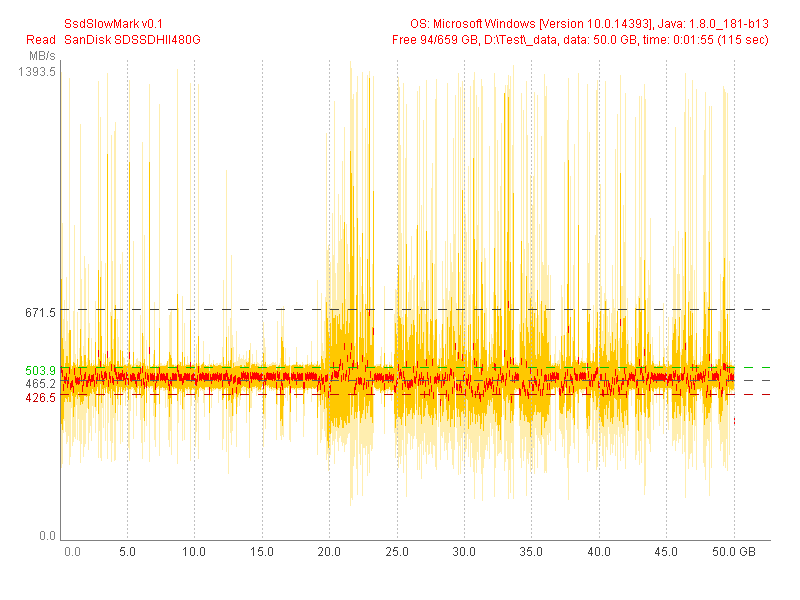

SanDisk SDSSDHII480G (Test 50 GB) |
|
| SsdSlowMark v0.1, OS: Microsoft Windows [Version 10.0.14393], Java: 1.8.0_181-b13 | |
| Read Performance | Write Performance |
avg.max: 671.5 MB/s, 30.1% (15.1 GB)
mid: 465.2 MB/s, 99.7% (49.9 GB)
min: 104.2 MB/s, 0.0% (0.0 GB)
typ.max: 503.9 MB/s, 100.0% (50.0 GB)
typ.min: 426.5 MB/s, 99.6% (49.8 GB)
|
avg.max: 177.5 MB/s, 11.9% (5.9 GB)
mid: 131.3 MB/s, 90.1% (45.1 GB)
min: 90.2 MB/s, 56.1% (28.1 GB)
typ.max: 146.7 MB/s, 81.0% (40.5 GB)
typ.min: 103.0 MB/s, 90.7% (45.3 GB)
|
|  | |
|  | |
|  | |